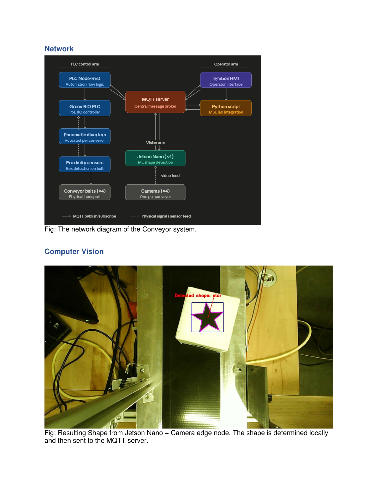
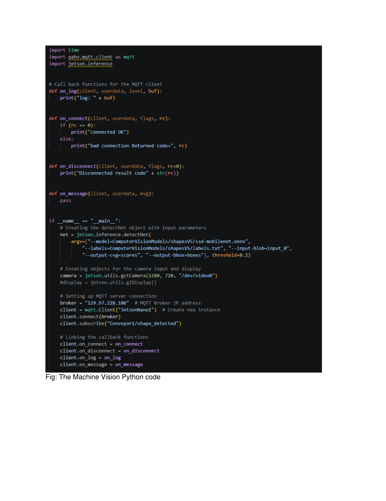

Core thesis
The machine-learning work here is strongest when it's wired to cameras, conveyors, optics, sensors, and data acquisition. I frame it as Physical AI: perception systems that act on real manufacturing, inspection, and education platforms rather than abstract datasets.
- Conveyor vision: Jetson Nano edge nodes classify shapes locally and publish results to the automation stack over MQTT.
- Published inspection ML: co-authored automated crack-quantification algorithms for photovoltaic backsheet materials (IEEE, SPIE, Polymer Degradation & Stability).
- Spectral / optical ML: a research direction toward real-time material-composition imaging and thin-film inspection.
- Applied contexts: Toyota Innovation Challenge and other IDEAs Clinic events provide live automation, sensing, and AI problems.

Conveyor machine vision
Python and Jetson Nano inference logic detect shapes from camera input and send machine-readable results to the conveyor system, computing perception near the line.

Automated crack quantification
Co-developed an automated image-analysis algorithm to quantify cracks in photovoltaic backsheets under accelerated and real-world UV exposures — a non-destructive computer-vision method published with the CWRU SDLE Center.
Spectral / optical inspection
Extending optical metrology toward physics-informed spectral analysis for industrial materials and thin films — measuring composition and quality in real time.
Toyota Innovation Challenge
A two-day IDEAs Clinic and TMMC event where students tackle real manufacturing-sector problems through software and hardware challenges. It's evidence of applied automation, manufacturing, and physical-AI program delivery.
Teaching systems & data-rich labs
Beyond individual projects: machine-vision stations, edge IoT nodes, PLC automation modules, optical inspection setups, sensor dashboards, and real-time monitoring tools developed as hands-on learning modules across engineering courses (including ME and MTE mechatronics integration).
Source basis: Conveyor Project PDF; Silas Ifeanyi résumé materials and publication list (PV backsheet crack-quantification papers, IEEE WCPEC 2018, SPIE 2017, Polymer Degradation & Stability 2018); In-Situ Film Quality Monitoring and Nanometrix/BluePaper Imaging notes; University of Waterloo IDEAs Clinic public pages.